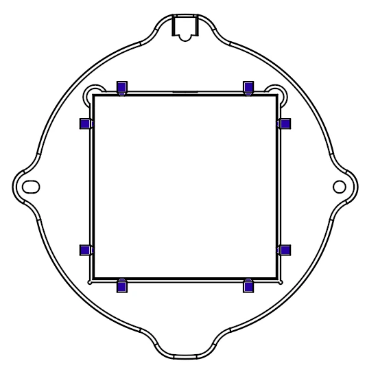
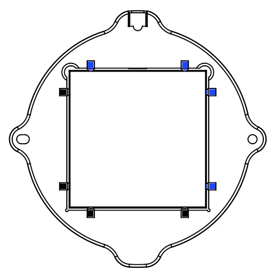
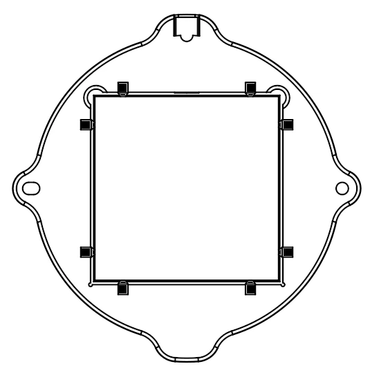
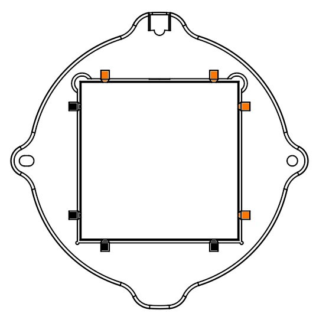
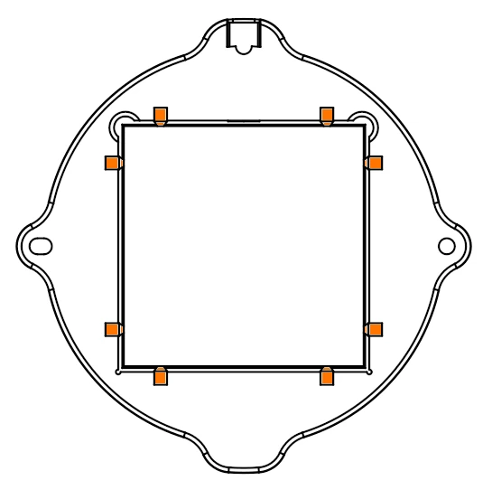

Tile Bat System Setup Guide
Bumper Removal and Swapping
To adjust the inner dimensions of your tile bat system, swap or rearrange the corner bumper inserts. Slide the included tool onto the bumper, and pry downward to release the bumper. Ensure the receiving channels are free of clay slurry before pressing the new bumper configuration firmly into place. The tool may be used to aid in installing the replacement bumper.
Bumper Configuration Table
Different tile manufacturers produce standard "6-inch" tiles with slight variations in exact dimensions. Use the reference table below to identify the bumper combination needed for your specific tile stock. Hover over any diagram to enlarge it. You may need to experiment to find the perfect size for your specific tiles. The tile should be snug, but it should not require a lot of force to install the tile.
| Configuration | Inner Opening | Bumper Combination | Compatible Tile Types & Notes | Visual Diagram |
|---|---|---|---|---|
| A | 155.0 mm | All Blue Bumpers | Oversize 6" tiles |  |
| B | 154.0 mm | Half Blue / Half Black Bumpers | Intermediate fit for slightly oversized tiles |  |
| C | 153.0 mm | All Black Bumpers | Standard 6" tiles (including Lowe's Daltile) |  |
| D | 151.5 mm | Half Black / Half Orange Bumpers | Narrow profile tiles |  |
| E | 150.0 mm | All Orange Bumpers | True 150 mm tiles (such as older Lowe's Satori lines) |  |